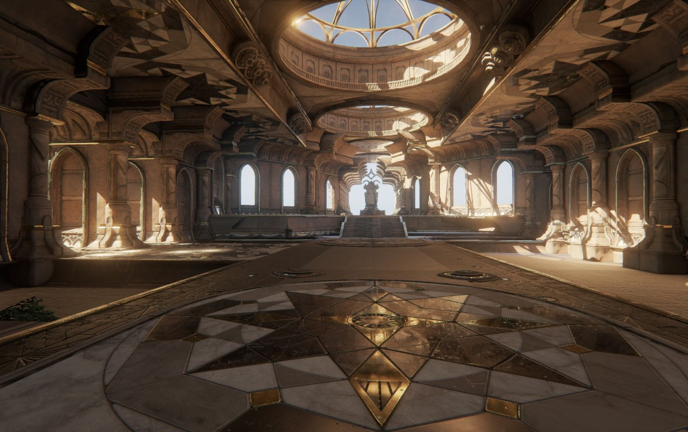
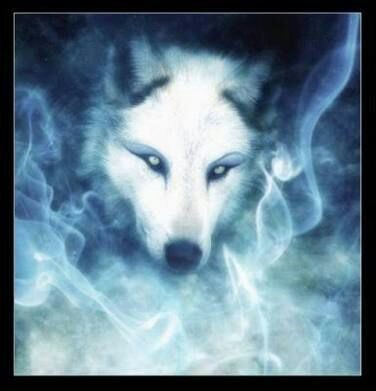

Chegaram na entrada do castelo, o vento rugia ao redor, sentiram um poder enorme do lado de dentro e quando entraram encontraram Magnus no rall de entrada.
-Magnus: Ora vejam só quem vieram ao meu encontro. Sabe eu ainda me perguntei se vocês realmente teriam a audácia de virem ate mim confesso que nesse sentido eu subestimei vocês.
-Hiroki: Você não e pário para nós e estamos dispostos a passar pelo que for para voltarmos para casa.
Assim você me deixa triste poderia ao menos dizer como se sente feliz em me ver, Scarlett meu amor que decepção em saber que você o prefere do que a mim, como estou vendo vocês não vieram se unir a mim certo?
-Elinthy: Nunca faríamos tal coisa.
-Magnus: Então morram.
Assim apareceu o lobo de Magnus atrás de Elinthy e Scarlett e a frente de Rinorí e Hiroki estava Magnus, esse seriam o seu maior desafio, para poderem provar suas dignidades.
Luta de Scarlett e Elinthy com o Lobo:
Scarlett jamais vira um lobo como aquele, sem duvida esalava cheiro de magia necromante mais ele era quem provinha Magnus, uma alma da sabedoria vivia dentro do lobo, quando Scarlett se deu conta de que Elinthy ia para cima do lobo sua espada empunhada atacou-o mais ele levantou a pata para golpear acertando Elinthy que caiu do outro lado da sala, Scarlett sbia que elas não teriam chances com aquele lobo.
-Scarlett: ELINTHY! Consegue ganhar tempo pra mim quero testar uma coisa, acho que podemos atrasá-lo.
-Elinthy: Claro eu atraso ele para você.
Elinthy foi novamente para cima do lobo, e quando ele foi tentar golpea-la com a pata novamente ela deslizou pelo chão e diferiu um corte na perna do lobo que o fez cambalear e recuar um pouco.
Como Scarlett pensava, o golpe que Elinthy diferiu no lobo surtiu efeito em Magnus também suas almas estavam conectadas de alguma forma, Scarlett se concentrou e então ela viu, Magnus encontrado aquele lobo e o voto de vida que fizeram um para o outro, sendo assim se um perdesse a vida o outro perderia metade de seus poderes, ela teria que afetar aquela alma de algum modo.
Elinthy viu que o corte que fizera tinha surtido efeito então ativou seu frenesi de batalha e partiu para cima do lobo com os olhos sedentos. Ela se esquivava com muita facilidade dele e o cortava cada vez mais, ela e sua espada pareciam uma todos os golpes completamente calculados e o lobo cambaleava de um lado para o outro, nem mesmo a magia necromante atigia-lhe naquele momento.
Scarlett dentro da alma viu quem abrigava ali, um ser que ela jamais havia visto.
-???: Meu nome é Hivisk quem é você para entra em minha mente desta froma.
-Scarlett: Vou mata-lo Hivisk, isto é tudo que precisa saber de mim.
Scarlett pegou sua lança e partiu para cima de Hivisk aquela alma seria a mais forte que ela enfrentaria em toda sua vida, era realmente muito poderoso, como se prevêsse todos os seus golpes
ele se esquivava com muita facilidade, ela não poderia falhar Elinthy estava ganhando tempo para ela do lado de fora, precisava continuar tentando.
-Hivisk: Admiro-lhe por sua tentativa mas você certamente mecheu com o espirito errado não tenho tempo para brincar com crianças.
-Scarlett: Eu não sou criança.
Scarlett partiu para cima novamente e dessa vez acertou um golpe em Hivisk que o fez cair.
O pelo do lobo não era mais branco, estava banhado de sangue, Elinthy estava começando a fazer picadinho dele até que ele caiu. Elinthy percebeu que Scarlett tinha ido ao encontro da alma do lobo, pois seu corpo estava flutuando em volta de uma bolha verde. O lobo havia desmaiado sua respiração estava mais que um leve sopro, então Elinthy se aproximou e daria um ultimo golpe nele com a espada erguida Elinthy a desceu em direção a cabeça do lobo, mas era tarde de mais.
Scarlett viu aquela cena enquanto Hivisk levantou subitamente e a segurou pelo pescoço, era tarde de mais, antes que Elinthy
decesse sua espada o lobo mordeu-lhe sua garganta Scarlett sentiu a dor de Elinthy que olhou no fundo dos olhos do lobo sabendo que Scarlett a via e disse seu ultimo pensamento “Eu tentei desculpe-me” antes de curvar sua cabeça para baixo e morrer ali na boca daquele lobo.
Scarlett soltou um grunhido perdêra uma amiga, uma mulher linda, incrível ela tinha deixado que isso acontecesse com Elinthy.
-Hivisk: Está vendo o que acontece quando alguma criança tenta brincar comigo, morra.
Scarlett estava sendo sufocada seus pulmões já estavam sem ar mas as palavras de Hivisk pesaram mais em seu coração ela não deixaria que Elinthy morresse em vão então disse:
-Scarlett:”Dimittere te”. Que significa “Libero você”.
A alma de Hivisk começou a ser sugada, ela tinha liberado sua alma para os confins ele não poderia voltar novamente, para seu mestre aquele que cuidara dele durante muito tempo.
-Hivisk: Sua garota estupida, NÃOO!.
Scarlett fez o que deveria fazer expulsou a alma de Hivisk para os
confins ele nunca mais poderia voltar para Magnus, quando ela se virou de costas para aquela alma, sentiu. A dor a consumia por dentro sua lança a perfurara o coração e a deixara empalada, Hivisk sorriu ao ver Scarlett se contorcer empalada em sua própria lança que ele lançara nela e disse:
-Hivisk: Minha missão está feita mestre. E desapareceu.
Era o fim de Scarlett, seu ultimo suspiro veio e ela morreu ali olhando para o corpo de Elinthy sua garganta aberta, toda ensanguentada, e aquele lobo de olhos arregalados completamente sem vida ao lado de Elinthy.
Luta de Rinorí e Hiroki contra Magnus:
-Magnus: Vocês deveriam ter aceitado minha oferta, são tão ingênuos a ponto de pensar que deixarei vocês saírem vivos daqui.
-Rinorí: Não nos subestime Magnus você pode se surpreender, e mesmo que não saiamos vivos hoje nós levaremos uma parte de você conosco.
Magnus explodiu fogo para todos os lados, Hiroki fez uma barreira de gelo para se
defender, mas ela se desfez mais rápido do que ele esperava. Rinorí abaixou-se no chão para desviar do fogo.
Hiroki avançou pra cima de Magnus cetros se chocaram e eles entraram em uma luta corporal, Rinorí foi para cima assim como Hiroki mais então Magnus atirou fogo novamente, mas não antes que Rinorí o atingisse com o cajado.
Hiroki pulou em cima de Magnus e os dois saíram rolando, Magnus deu um soco no estomago de Hiroki que cambaleou, mas Rinori já vinha atrás para forçar ouro golpe contra Magnus, mas ele o atingiu com fogo, que deixou a manga de sua blusa em fagulhos e uma queimadura em seu braço.
Magnus levantou mais caiu, sem nada o ter atingido, foi tudo muito rápido a espada de Elinthy, seu lobo caído ao chão, Scarlett empalada em sua própria lança, e escutou quando seu miais fiel amigo o deixou, Magnus perdeu metade de seus poderes, sua magia de necromancia acabara de deixar-lhe.
Hiroki e Rinori viram o que tiha deixado Magnus tão atordoado pois os próprios estam, as duas ali mortas, gelo explodiu sobre a sala, Rinori deu um grito de fúria chamando o nome de Elinthy.
Hiroki concentrou todo seu poder, seus olhos brilharam azuis e começaram a deixar rastro de fumaça azul, Rinori atendeu a atitude de Hiroki e também se concentrou, seus olhos ficaram negros brilhantes também exalando fumaça. Eles usariam seus poderes para a transformação final afim de acabar com a vida de Magnus.
A invocação final seria uma fênix negra, vinda de Hiroki e Rinorí, ela seria a salvação após o ocorrido, a fênix se materializou na frente de Magnus, que se levantou com um pouco de dificuldade.
-Hiroki: Por Scarlett.
-Rinorí: Por Elinthy.
A fenix foi para cima de Magnus que teve que correr para um canto, lutar contra aquela criatura sem a ajuda de seu lobo, metade de sua magia se fora, ele estava em desvantagem, mas nem por um momento deixaria que todo seu sacrifício durante muitos anos tivesse sido em vão.
A fênix foi para cima de Magnus novamente, que se esquivou dela, ele correu para frente e golpeou Rinorí que estava com a guarda baixada, hiroki tentou acertar Magnus com seu cajado mais não deu muito certo, suas forças se eusariam muito rápido por causa da invocação, seus sentidos ficariam menos aguçados, Hiroki e Rinori cambalearam para um lado, e a Fenix veio para onde Magnus estava, voou baixo e bateu o bico nas costas de Magnus fazendo-o cair no chão, assim ela deu uma volta e retornou com as garras expostas, cravou as garras nas costas de Magnus que urrou de dor.
Com os ombros sangrando Magnus estava sendo levado para cima, aquele pássaro inútil tinha o ferido muito, a dor que sentira quando as garras perfuraram-lhe a pele, e o sangue jorrou quente e úmido ao mesmo tempo, juntamente com o suor que escorria, ele pensava que seria o fim dele ali, mas não podia perder para aquelas crianças que nunca souberam o que era perder na vida.
A Fenix já estava o mais alto que conseguia, então com as garras cheias de sangue fresco, soltou Magnus la de cima que despencou chocando-se ao chão, soltou um grito agonizante de dor, o impacto foi muito forte e fez com que o braço de Magnus quebrasse, seu osso saiu pelo braço ficando completamente pendurado, ele olhou para Hiroki e Rinorí com tremendo ódio.
Hiroki e Rinorí se deliciaram a ver o sofrimento de Magnus, fariam com que aquilo durasse tempo suficiente até que Magnus quebrasse,e morreria pedindo por misericórdia, mas Magnus não perderia facilmente. Ele se levantou com o braço pendendo sobre o corpo e correu, a Fenix vinha em direção a ele novamente, mas ele se abaixou e com seu cetro rasgou a barriga da Fenix ate sua garganta, perfurando seu crânio.
Hiroki e Rinorí se assustaram, tentaram correr para o outro lado da sala, mas Magnus veio cambaleante, para cima deles.
-Rinorí: Vá Hiroki, eu vou atrasá-lo.
-Hiroki: Não, eu já perdi a Scarlett, a Elinthy se foi e não posso ver meu amigo ir também.
-Rinorí: Como é Hiroki eu nunca me entregaria de bandeja.
-Hiroki: Não posso permitir.
Rinorí foi ao encontro de Magnus, derrubou-o no chão e gritou para que Hiroki fosse, seu amigo estava se sacrificando por ele, ele teria que acabar com Magnus a qualquer custo, seu amigo, não poderia perde-lo também, mas então ouviu o grito de Rinorí, sendo queimado vivo em cima de Magnus seus gritos ecoaram nos ouvidos de Hiroki, então ele caiu e começou a chorar.
-Hiroki: NÃÃÃÃOOO! RINORÍÍÍÍÍÍÍ.MORRA MAGNUS.
Rinorí foi atirado para um lado por Magnus, seu corpo tornando-se cincas, o cheiro de pele queimada tomou conta do lugar, Hiroki avançou contra Magnus que estava com a espada de Elinthy em mãos.
-Magnus: Você vai morrer pela espada dela, eu disse para não me subestimar, agora você ira sentir todo meu ódio.
Magnus atacou e Hiroki levantou uma barreira de gelo que explodiu em sua frente, Magnus atacou com a espada novamente, Hiroki se esquivou e acertou o braço quebrado de Magnus, ele gritou de dor e atirou fogo.
Hiroki se abaixou e aproveitou a oportunidade para dar mais um golpe, Magnus estava de joelho no chão quando Hiroki levantou seu cetro Magnus se levantou dando uma rasteira em Hiroki que foi ao chão, e a espada estava em sua garganta.
Naquele momento Hiroki viu a morte, seus amigos o chamando do outro lado a voz de Scarlett, então ele disse.
-Hiroki: Esperem por mim. E fechou os olhos quando teve sua cabeça decaptada por Magnus.
-Magnus: Isso é dor.
Magnus jogou a espada para um lado segurando a cabeça de Hiroki, foi até seu lobo, que estava destroçado ao canto da sala.
-Magnus: Eu vinguei você Hivisk, espere por mim nos confins meu fiel amigo, devo minha vida a você.
Então ele saiu do castelo, empalou a cabeça de Hiroki bem na entrada e ateou fogo no castelo, que se explodiu atrás dele mais continuou andando, com um sorriso maligno em seu rosto, e lá foi ele, para o Vilarejo matar todos que fizeram mal para seu lobo.